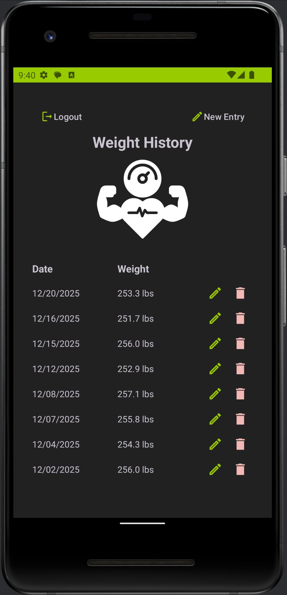

Professional Self-Assessment
Introduction & Career Alignment
Hello, I'm Aleks. Welcome to my professional computer science ePortfolio. As a graduate of the SNHU Computer Science program, my career goal is to develop software systems that streamline workflows in ethical, human-centered ways. I am deeply interested in building tools that augment human work, catch systemic errors, and improve code quality while keeping users in control of critical decisions. This portfolio showcases my ability to take a functional mobile application and systematically refactor it to meet modern enterprise standards for architecture, algorithmic defense, and database security.
The Refactoring Process & Project Management
My capstone focus centers on my mobile application, Weight Tracker, originally designed in Java using Android Studio in December 2025. Revisiting this codebase provided a valuable lesson in software lifecycle management. I learned the critical importance of making disciplined, incremental improvements to an existing application rather than trying to overhaul too many components simultaneously. Approaching a legacy codebase with fresh eyes allowed me to be critically objective about my past work, helping me identify core opportunities to optimize user experience and code maintainability without disrupting foundational features.
Demonstrated Technical Competencies
- Software Engineering & Design: I demonstrated advanced structural design by extracting duplicated, scattered logic into centralized, reusable navigation and SMS helper classes. This eliminated redundant syntax, established UI consistency across screens via a global bottom navigation bar, and proved my ability to scale an application smoothly.
- Algorithmic Defense & Performance: My algorithmic updates reinforced that software logic is not just about writing a correct formula. It requires defining strict business logic rules and handling edge cases defensively. By implementing analytics modules that require baseline data coverage and restrict calculations based on user trends, I ensured the application delivers defensible, reliable outputs to consumers.
- Multi-Layer Data Security: To showcase a mature security mindset, I refactored the application's data tier. Relying solely on application-layer input validation exposes systems to corruption if bugs occur. By introducing parameterized queries to completely block SQL injection vulnerabilities, alongside strategic database-level CHECK constraints, I established a resilient, multi-layered data protection architecture that ensures long-term data privacy and integrity.
Conclusion
Ultimately, the synthesis of architecture refactoring, algorithmic data filters, and database-level protections transformed this project from a basic student assignment into a polished, professional artifact. The pages below document my complete development path, code assessments, and the technical narratives driving each engineering choice.
Milestone One: Code Review Walkthrough
Course Outcome: Oral, Written, and Visual CommunicationThis video features a structured walk-through of the original Java source code components. It establishes the foundational enhancement goals for modular code structures and database security configurations.
Visual Evolution: Weight History Transformation
The Weight History screen captures the core of my capstone upgrades. This side-by-side comparison demonstrates a complete transformation in user experience, data calculation, and local system management across all three enhancement pillars.

Original 2025 Baseline
Lacks global navigation. Data is listed without any calculations or summary data, and the header features a simple "New Entry" button.

Enhanced Capstone Version
Integrates a global bottom navigation bar. Features active data metrics/analytics, and includes a refactored SMS notification toggle switch.
Enhancement 1: Software Design & Engineering
Course Outcome: Design and Evaluate Computing SolutionsNarrative
Implementing the software engineering enhancements improved the application by extracting repeated logic into shared helper classes, which made the code cleaner, easier to maintain, and more consistent across screens. Specifically, I created reusable navigation and SMS toggle helpers so the Daily, Goal, and History screens could share the same behavior without duplicating code. These changes demonstrate growth in my software development practices because they reflect a more maintainable and scalable design approach.
This was also a good opportunity to show I can improve an existing codebase without disrupting the original functionality. For example, navigation and toggle logic were originally limited to specific screens, but I refactored that behavior into helper classes and made it accessible from all relevant screens through a bottom navigation bar. This made the app more convenient for the user while also reducing duplication and making the code easier to understand. It required careful attention to shared state, such as the user ID and SMS preferences. In addition, the SMS notification flow now provides better communication when a goal is reached by prompting the user to decide whether they would like to set a new goal right away.
Core Code Implementation: Architectural Extraction
To demonstrate industry-standard software engineering practices, I refactored the application's structural layer. By moving the navigation logic into a centralized utility class, I eliminated duplicate code and ensured a uniform user experience across all primary tabs.
/**
* Shared bottom navigation setup for the three main screens.
* <p>
* Centralizing this logic reduces duplication and keeps navigation
* behavior consistent across the app.
*/
public final class NavigationHelper {
private NavigationHelper() {
// Utility class
}
/**
* Configures the bottom navigation bar for the current screen.
*
* @param activity current activity
* @param bottomNav bottom navigation view
* @param selectedItemId menu item that should appear selected
* @param userId active user ID to pass between screens
*/
public static void setupBottomNav(Activity activity,
BottomNavigationView bottomNav,
int selectedItemId,
int userId) {
bottomNav.setSelectedItemId(selectedItemId);
bottomNav.setOnItemSelectedListener(item -> {
int itemId = item.getItemId();
// Keep the current tab selected without reloading the same screen.
if (itemId == selectedItemId) {
return true;
}
Intent intent = null;
if (itemId == R.id.nav_new_entry) {
intent = new Intent(activity, DailyWeightActivity.class);
} else if (itemId == R.id.nav_history) {
intent = new Intent(activity, HistoryActivity.class);
} else if (itemId == R.id.nav_goal) {
intent = new Intent(activity, GoalWeightActivity.class);
}
if (intent != null) {
intent.putExtra("USER_ID", userId);
activity.startActivity(intent);
activity.overridePendingTransition(0, 0);
activity.finish();
activity.overridePendingTransition(0, 0);
return true;
}
return false;
});
}
}Enhancement 2: Algorithms & Data Structures
Course Outcome: Algorithmic Principles & PracticesNarrative
For the algorithms and data structures enhancement, I expanded the application beyond basic data entry by adding analytics features that process the user’s historical weight entries. Because weight history is naturally an ordered collection of data points, it provided a good opportunity to demonstrate algorithmic thinking through time-based calculations and careful handling of edge cases. Specifically, I implemented date-window calculations for 7-day and 30-day rolling averages, trend direction (gain/loss/flat), per-entry weight change (Δ), rate of change (computed as lbs/day and displayed as lbs/week), and an estimated time to reach the user’s goal (ETA in days) when enough data is available (see Figures 1-4). I also added consistent rounding and “no data” behavior (represented by an em dash) so the app does not present misleading results when history is limited or a metric cannot be computed responsibly.
This enhancement shows I can improve an existing codebase without disrupting the original functionality. The original history view primarily displayed entries, but the new analytics makes the stored data more useful by summarizing progress in a way that is consistent and interpretable. These improvements also connect with my interest in AI and data-driven development because they focus on extracting meaningful information from data, making defensible assumptions, and ensuring calculations behave reliably.
Core Code Implementation: Algorithmic Logic & Edge-Case Defense
To demonstrate advanced algorithmic thinking, I designed defensive logic checks into the application data analytics layer. This snippet showcases loop systems that actively look for distinct calendar days and filter data boundaries. This ensures that rate-of-change and progress trends are calculated using valid, consistent date milestones.
// =====================================================
// Trend & rate-of-change
// =====================================================
private static TrendType trendType(Double lbsPerDay) {
if (lbsPerDay == null) return TrendType.INSUFFICIENT;
if (Math.abs(lbsPerDay) < FLAT_EPSILON_LBS_PER_DAY) return TrendType.FLAT;
return lbsPerDay < 0 ? TrendType.LOSS : TrendType.GAIN;
}
private static final class RateInfo {
final double lbsPerDay;
RateInfo(double lbsPerDay) {
this.lbsPerDay = lbsPerDay;
}
}
/**
* Computes slope using the most recent entry and the most recent earlier distinct day.
*/
private static RateInfo rateOfChange(List<DatedWeight> sortedByDateAsc) {
if (sortedByDateAsc.size() < 2) return null;
DatedWeight last = sortedByDateAsc.get(sortedByDateAsc.size() - 1);
// Find the most recent entry that occurred on an earlier day than the last entry.
DatedWeight prevDistinctDay = null;
for (int i = sortedByDateAsc.size() - 2; i >= 0; i--) {
DatedWeight candidate = sortedByDateAsc.get(i);
if (candidate.epochDay < last.epochDay) {
prevDistinctDay = candidate;
break;
}
}
if (prevDistinctDay == null) {
// All entries are on the same day -> can't compute lbs/day
return null;
}
long days = last.epochDay - prevDistinctDay.epochDay;
double delta = last.weight - prevDistinctDay.weight;
return new RateInfo(delta / (double) days);
}
/** Computes lbs/day slope using entries within the last 7 days (by date window). */
private static RateInfo rateOfChangeInLast7Days(List<DatedWeight> sortedByDateAsc) {
final int daysWindow = 7;
if (sortedByDateAsc.size() < 2) return null;
long lastDay = sortedByDateAsc.get(sortedByDateAsc.size() - 1).epochDay;
long cutoff = lastDay - (daysWindow - 1);
// Find first entry within the window
int startIdx = -1;
for (int i = 0; i < sortedByDateAsc.size(); i++) {
if (sortedByDateAsc.get(i).epochDay >= cutoff) {
startIdx = i;
break;
}
}
if (startIdx == -1) return null;
// Use the latest entry as the end, and find an earlier distinct day within window
DatedWeight last = sortedByDateAsc.get(sortedByDateAsc.size() - 1);
DatedWeight firstDistinct = null;
for (int i = startIdx; i < sortedByDateAsc.size(); i++) {
DatedWeight candidate = sortedByDateAsc.get(i);
if (candidate.epochDay < last.epochDay) {
firstDistinct = candidate;
break;
}
}
if (firstDistinct == null) return null;
long days = last.epochDay - firstDistinct.epochDay;
if (days <= 0) return null;
double delta = last.weight - firstDistinct.weight;
return new RateInfo(delta / (double) days);
}Enhancement 3: Database Integration & Security
Course Outcome: Security Mindset & Data PrivacyNarrative
For the database enhancement, I focused on both security and performance. I refactored my DatabaseHelper class to use parameterized queries throughout (Figure 1), eliminating the risk of SQL injection attacks and making the codebase more maintainable. I added strategic indexes on frequently queried columns (Figure 2) to optimize query performance for analytics calculations and login validation. I also implemented CHECK constraints at the database level (Figure 3) to enforce data integrity rules (valid weights, reasonable goals, proper date ordering), ensuring invalid data cannot enter the database regardless of application logic. These enhancements take the database design beyond simply storing data by actively protecting against both security threats and data corruption, while supporting efficient querying for features like analytics.
This combination of enhancements shows I can improve an existing codebase across multiple layers (application logic, data structures, and database design) without disrupting original functionality. These improvements connect with my interest in building systems that are secure, efficient, and defensible because they focus on extracting meaningful information from data, making careful assumptions, and ensuring calculations and queries behave reliably.
Core Code Implementation: Secure Parameterized Queries
To demonstrate a mature data security mindset, I refactored the data tier to completely prevent SQL injection exploits. These centralized query helpers isolate data access using Android's native structured query engine, enforcing type-safe parameterized arguments while safely managing database cursor streams to prevent memory leaks.
// =====================================================
// Helper methods for consistent query execution
// =====================================================
/**
* Executes a SELECT query and returns a single Long value.
* Closes the cursor automatically.
*
* @param table the table name
* @param column the column to select
* @param whereClause the WHERE clause (without "WHERE")
* @param whereArgs the query arguments
* @return the value, or -1 if not found
*/
private long queryForLong(String table, String column, String whereClause, String[] whereArgs) {
SQLiteDatabase db = this.getReadableDatabase();
try (Cursor cursor = db.query(table, new String[]{column}, whereClause, whereArgs,
null, null, null)) {
if (cursor.moveToFirst()) {
return cursor.getLong(0);
}
}
return -1;
}
/**
* Executes a SELECT query and returns a single Double value.
* Closes the cursor automatically.
*
* @param table the table name
* @param column the column to select
* @param whereClause the WHERE clause (without "WHERE")
* @param whereArgs the query arguments
* @return the value, or null if not found
*/
private Double queryForDouble(String table, String column, String whereClause, String[] whereArgs) {
SQLiteDatabase db = this.getReadableDatabase();
try (Cursor cursor = db.query(table, new String[]{column}, whereClause, whereArgs,
null, null, null)) {
if (cursor.moveToFirst()) {
return cursor.getDouble(0);
}
}
return null;
}
/**
* Executes a SELECT query and returns a single String value.
* Closes the cursor automatically.
*
* @param table the table name
* @param column the column to select
* @param whereClause the WHERE clause (without "WHERE")
* @param whereArgs the query arguments
* @return the value, or null if not found
*/
private String queryForString(String table, String column, String whereClause, String[] whereArgs) {
SQLiteDatabase db = this.getReadableDatabase();
try (Cursor cursor = db.query(table, new String[]{column}, whereClause, whereArgs,
null, null, null)) {
if (cursor.moveToFirst()) {
return cursor.getString(0);
}
}
return null;
}
/**
* Executes a SELECT query and returns whether a record exists.
* Closes the cursor automatically.
*
* @param table the table name
* @param whereClause the WHERE clause (without "WHERE")
* @param whereArgs the query arguments
* @return true if at least one record matches, false otherwise
*/
private boolean recordExists(String table, String whereClause, String[] whereArgs) {
SQLiteDatabase db = this.getReadableDatabase();
try (Cursor cursor = db.query(table, new String[]{"1"}, whereClause, whereArgs,
null, null, null)) {
return cursor.getCount() > 0;
}
}